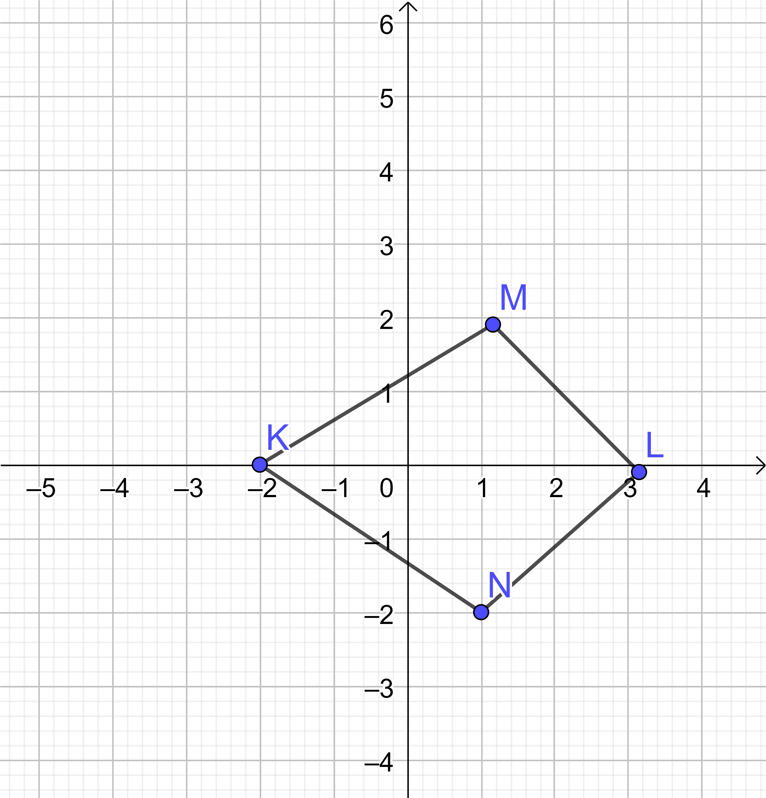

Denah tersebut menunjukkan perjalanan Adam yang ingin pergi toko olahraga saat pulang sekolah. Bagaimana cara mengambar denah? Alat apa saja yang akan digunakan?
Dalam menggambar letak benda, sebaiknya kamu menggunakan skala. Skala adalah perbandingan antara ukuran jarak pada gambar dan jarak sebenarnya.
Perhatikan kembali denah letak keberadaan Adam yaitu di sekolah. Dalam mengambar denah, berikut langkah-langkahnya :
1. Persiapkan alat-alat yang diperlukan
a) kertas
b) pensil
c) penggaris
d) buku
2. Tentukan titik acuan. Ambil titik acuan yang sudah dikenal orang (familiar). Misalnya, rumah sakit, museum, dan bank.
3. Menentukan arah (utara, selatan, barat, dan timur) pada bidang gambar
4. Mulailah menggambar letak tempat yang dimaksud. Mudah, bukan?
1. Motor terletak di posisi (1, 7)
2. Meja terletak di posisi (..., ...)
3. Handphone terletak di posisi (..., 8)
4. Laptop terletak di posisi (3, ...)
5. .... terletak di posisi (4, 3)
6. .... terletak di posisi (5, 5)
7. .... terletak di posisi (6, 2)
8. .... terletak di posisi (7, 4)
9. Buku terletak di posisi (..., ...)
1. India terletak pada koordinat (1, ...).
2. Malaysia terletak pada koordinat (..., 5).
3. Indonesia terletak pada koordinat (..., ...).
4. ... terletak pada koordinat (6, 5)
5. ... terletak pada koordinat (6, 9).
6. ... teletak pada koordinat (7, 1)
7. Papua Nugini terletak pada koordinat (..., 3)
1) Titik A terletak pada x = ..., y = ... sehingga koordinat titik A(..., ...).
Titik B terletak pada x = ..., y = ... sehingga koordinat titik B(..., ...).
Titik C terletak pada x = ..., y = ... sehingga koordinat titik C (..., ...).
Titik D terletak pada x = ..., y = ... sehingga koordinat titik D(..., ...).
Titik E terletak pada x = ..., y = ... sehingga koordinat titik E(..., ...).
Titik F terletak pada x = ..., y = ... sehingga koordinat titik F(..., ...).
Titik G terletak pada x = ..., y = ... sehingga koordinat titik G(..., ...).
Titik H terletak pada x = ..., y = ... sehingga koordinat titik H(..., ...).
2) Pada buku berpetak, gambarlah bidang koordinat di bawah ini. Kemudian, tentukanlah letak titik-titik berikut.
a. A(2, 1) b. B(3, 2)) c. C(0, –3) d. D(–4, 8) e. E(5, 5) f. F(6, 7) g. G(–7, –9) h. H(8, 8) i. I(9, 1) j. J(10, 3) k. K(5, 7)
1. Gambarlah titik-titik A(–3, 2), B(2, 2), C(4, 5), dan D(–1, 5) pada bidang koordinat. Bangun apakah yang terbentuk?
2. Diketahui koordinat titik L(1, –2), M(5, –2), dan N(2, –4). Jika kita ingin membentuk jajargenjang LMNO, tentukan koordinat titik O
3. Koordinat titik :
K (.., ...)
L (..., ...)
M(..., ...)
N(..., ...)
